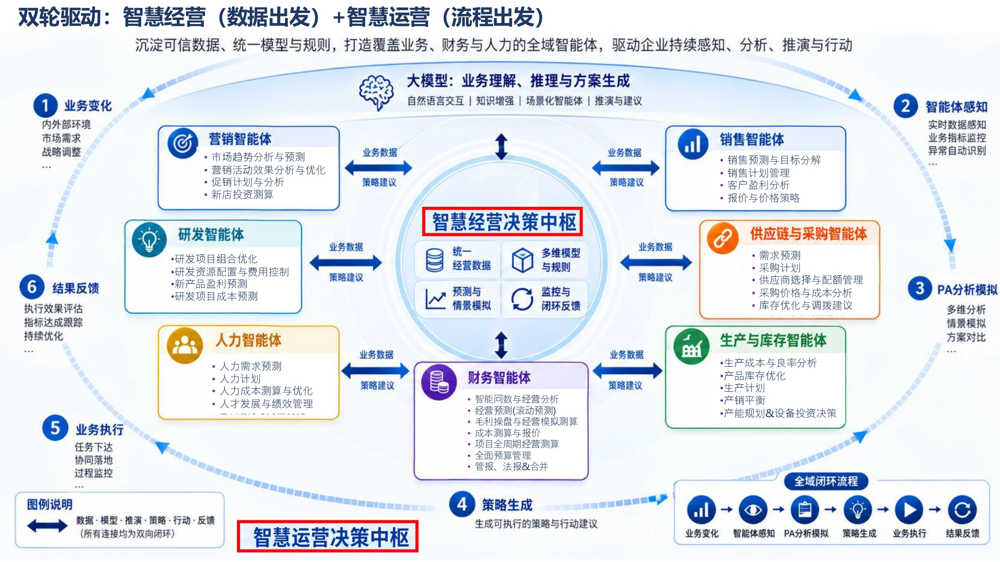
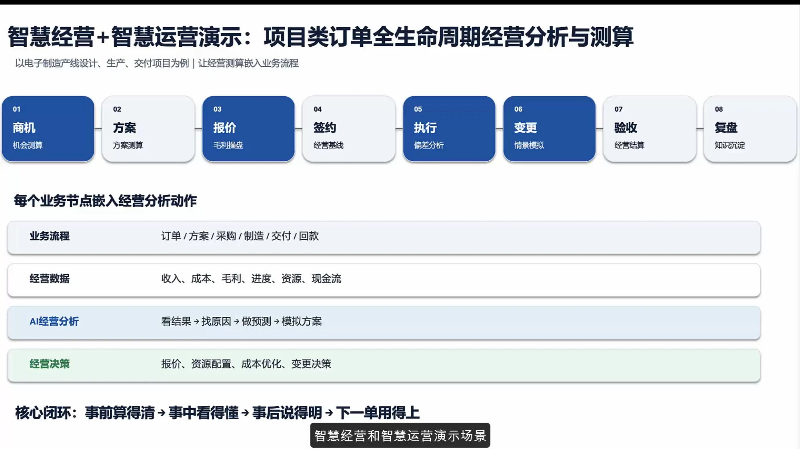
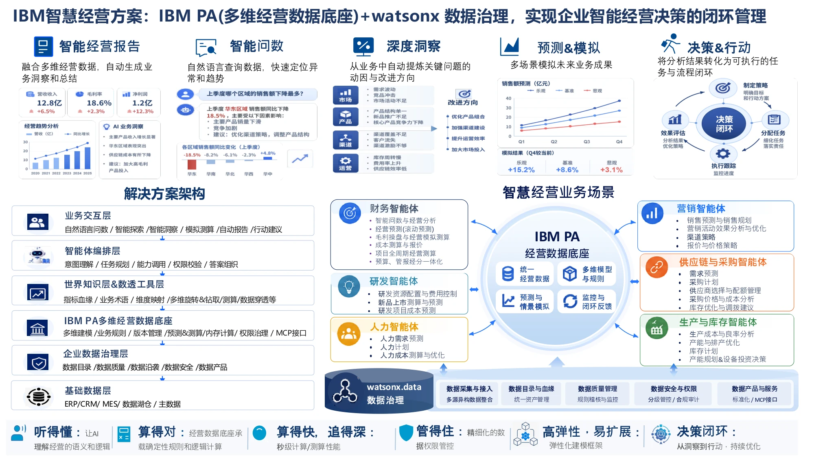
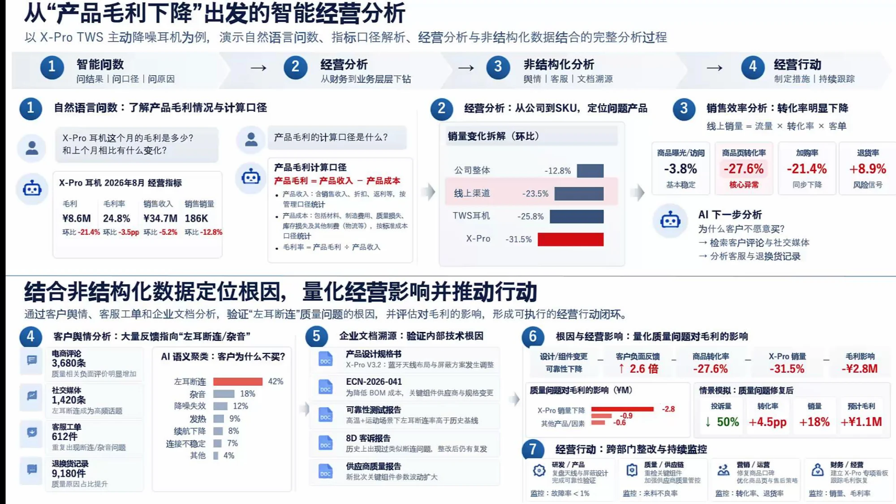
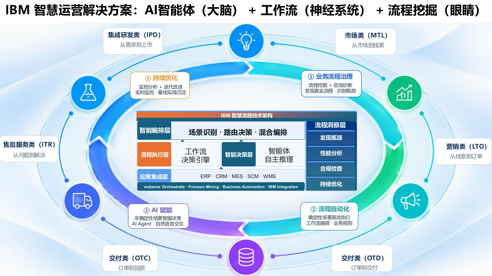
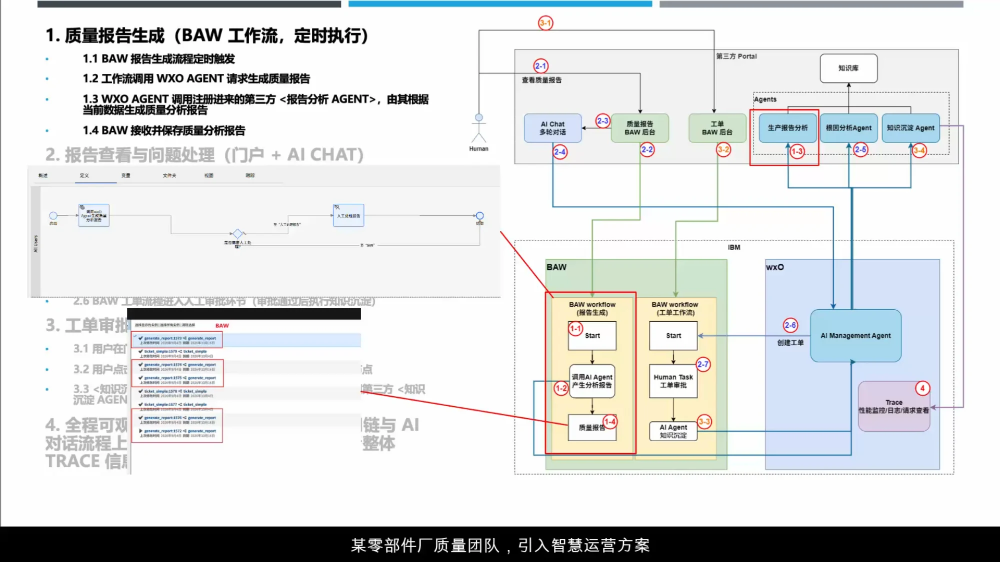

《智慧经营 + 智慧运营 One Page + DEMO》架构幻灯片
沉淀可信数据、统一模型与规则，打造覆盖业务、财务与人力的全域智能体闭环。点击下方缩略图或前后按钮切换页面，点击大图可全屏放大浏览。


P2
P3
P4
P5
P6双轮驱动：经营与运营决策中枢
- 智慧经营决策中枢：统一经营数据 + 多维模型与规则 + 预测与情景模拟 + 监控与闭环反馈。
- 智慧运营决策中枢：将经营策略翻译为可执行的任务与行动建议，驱动 6 大智能体协同。
- 全域闭环流：业务变化 ➔ 智能体感知 ➔ PA 分析模拟 ➔ 策略生成 ➔ 业务执行 ➔ 结果反馈。
项目类订单全生命周期经营测算
- 八大业务动作嵌入：商机测算、方案测算、报价毛利操盘、签约基线、执行偏差分析、变更情景模拟、验收经营结算、复盘知识沉淀。
- 业务流程穿透：打通“订单 / 方案 / 采购 / 制造 / 交付 / 回款”全链条。
- 数据贯通：收入、成本、毛利、进度、资源与现金流实时联动。
IBM PA 多维数据底座能力
- 智能经营报告：融合多维经营数据，一键自动生成业务洞察与管理总结。
- 智能问数与预测：自然语言直接查询经营数据，快速定位各区域、各产品异常波动。
- watsonx 数据治理：数据目录与血缘、数据质量规则稽核、敏感数据分级管控与 MCP 开放接口。
毛利下降归因与非结构化数据结合
- 以 X-Pro TWS 耳机为例：毛利率环比下降 3.5pp，下钻定位线上渠道与特定 SKU。
- 非结构化数据溯源：AI 语义聚类 3,680 条电商差评（42% 指向“左耳断连”），调阅工程变更说明书 ECN-2026-041。
- 量化财务影响：锁定天线布局降本导致的可靠性缺陷，量化损失 -2.8M，触发跨部门整改。
AI 智能体 + 工作流 + 流程挖掘
- 大脑（AI 智能体）：非确定性场景智能决策、多轮自然语言交互、意图理解与任务规划。
- 神经系统（BAW 工作流）：确定性场景高效执行、流程编排、严格业务规则与人工审批。
- 眼睛（Process Mining 流程挖掘）：发现真实业务流程、识别瓶颈与合规检查、持续优化闭环。
零部件厂质量团队实战架构
- 定时触发：BAW 工作流定时发起质量报告生成请求。
- 智能体调度：WXO 调用注册的第三方“报告分析 Agent”，结合实时数据生成报告。
- 工单审批与闭环：AI 报告推送至门户与 AI Chat，问题自动生成 BAW 人工审批工单，审批后执行知识沉淀并受全程 Trace 监控。
实战演示 ①：智慧运营闭环（BAW 工作流 + WXO 智能体协作）
基于某零部件制造厂的真实场景：展示如何通过 BAW 定时触发报告生成、调用 WXO Agent 组装质量分析、在门户中进行人机交互问答，并一键转人工工单审批与 Trace 监控。
1. 定时触发质量流程
BAW 业务流程引擎定时调度质量巡检任务，自动组装上下文并向 WXO 智能体编排层发起质量分析工单请求。
2. WXO 调度专用 Agent
WXO Agent 调度已注册的“生产报告分析 Agent”与“根因分析 Agent”，自动萃取 MES 与质量历史数据并生成结构化质量报告。
3. 门户交互与异常问答
质量工程师在统一门户的 AI Chat 界面中查看质量报告，并针对异常指标开展多轮自然语言追问与深度探查。
4. 工单审批与 Trace 闭环
AI 将异常自动转化为 BAW 人工审批工单；审批通过后触发知识沉淀 Agent，全流程在 IBM 观测平台形成可审计 Trace。
实战演示 ②：智慧经营 + 知识库（多维问数与非结构化根因溯源）
以电子消费品 X-Pro TWS 耳机“产品毛利率环比下降 3.5%”为例：演示从财务数据下钻到 SKU，结合 3,680 条用户差评、设计变更文档 ECN-2026-041 与 8D 报告的完整归因与决策闭环。
1. 结构化多维经营探查
自然语言查询：“X-Pro 耳机这个月的毛利是多少？与上个月相比有什么变化？”AI 调取 PA 多维模型秒级下钻，定位华东线上渠道为主要滑坡源。
2. 非结构化电商差评聚类
销售转化率骤降 27.6%。AI 调取电商评论（3,680条）与客诉工单（612件），NLP 聚类出 42% 集中在“左耳断连/杂音”，退换货飙升 9,180 件。
3. 内部技术文档与 ECN 穿透
知识库 Agent 检索产品设计变更说明书 ECN-2026-041，发现前期为降低 BOM 成本调整了蓝牙天线布局与屏蔽方案，导致可靠性大幅劣化。
4. 经营影响量化与跨部门行动
测算质量问题导致直接毛利损失 -2.8M。联动研发重新设计天线屏蔽、质量端严控供方参数，并在 PA 中设立 X-Pro 专项指标持续追踪毛利恢复。
实战演示 ③：智慧经营 + 智慧运营综合全景演练 (v2)
全方位端到端演示：将数据出发的经营预测测算与流程出发的敏捷运营工作流无缝融合，展现“双轮联动”如何赋能现代制造与高科技企业。
事前算得清：多维预测与模拟
在立项与商机阶段，基于历史成本多维模型秒级推演三种情景（乐观/基准/悲观），算清边际贡献与资源瓶颈。
事中看得懂：实时感知与偏差预警
在项目执行与制造交付中，实时汇聚 ERP/MES/WMS 流水，自动对齐经营基线，微小偏差秒级触达运营智能体。
事后说得明：精准归因与财务结算
验收结算阶段，自动穿透结构化流水与非结构化沟通凭证，讲透“赚在哪里、亏在哪里、卡在哪个节点”。
下一单用得上：模型沉淀与知识自演进
将执行过程中的真实损耗、工时标准与设计妥协反哺至 PA 测算规则库与知识库，让后续报价操盘更精准。
企业级落地技术矩阵与架构分层
双轮驱动解决方案依托 IBM 核心软件栈打造，各层组件职责清晰、松耦合解耦，支持混合云环境部署（OpenShift / 本地机房 / 专属云）。
IBM Planning Analytics (TM1)
角色定位：企业多维经营数据底座与内存测算引擎。
- 内存多维计算：专利级 TM1 多维内存立方体计算技术，支持十亿级单元格秒级聚合与情景模拟。
- 业务规则可塑性：支持财务、运营、供应链按需建立复杂分摊规则与预测模型。
- 标准 API 与 MCP 接口：完美对接大模型 Agent，实现结构化自然语言问数与反写。
IBM watsonx Orchestrate
角色定位：企业级 AI Agent 编排与多智能体协同大脑。
- 意图理解与技能编排：准确解析用户或工作流发起的非结构化诉求，动态调用对应子智能体。
- 多智能体调度：编排营销、采购、研发、财务、客服等领域智能体，自动聚合结果。
- 可审计 Trace：记录完整的 Agent 思考链路、Prompt 上下文与工具调用记录。
IBM Business Automation Workflow
角色定位：企业端到端业务流程自动化中枢（神经系统）。
- 严格确定性流程：保障核心财务审批、质量工单、跨部门调拨按严密合规逻辑流转。
- 人机协同编排：既支持定时/事件自动触发 Agent，又支持自动将异常升格为人工审批任务。
- 与 Process Mining 联动：无缝结合流程挖掘，持续暴露流程瓶颈与断点。
IBM watsonx.data + .governance
角色定位：全生命周期可信数据治理底座与 AI 合规护栏。
- 开放湖仓底座：基于 Apache Iceberg，低成本汇聚 ERP、CRM、MES、售后非结构化数据。
- 端到端数据血缘：从底层原始表到多维报表、再到大模型生成的分析建议，全程可追溯。
- 合规与护栏：保障敏感财务与供应链数据按角色脱敏，防止 AI 幻觉引发决策风险。